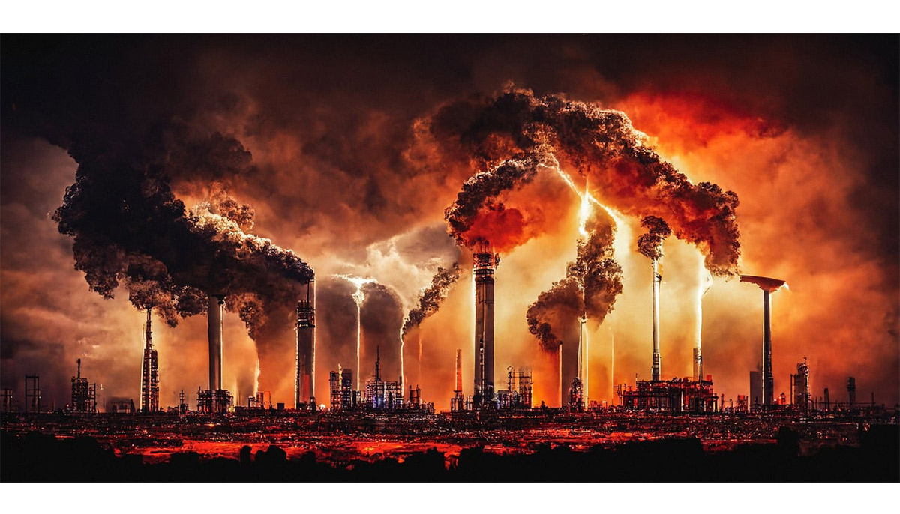

O que é a crise climática?
A crise climática é uma emergência global causada pelo aumento de gases de efeito estufa na atmosfera. Isso resulta em mudanças perigosas no clima, como temperaturas extremas, elevação do nível do mar e desastres naturais mais frequentes.
Como ela acontece
Os gases de efeito estufa, como dióxido de carbono (CO₂), metano (CH₄) e óxido nitroso (N₂O), são essenciais para manter a temperatura da Terra adequada à vida. No entanto, a atividade humana tem aumentado drasticamente a concentração desses gases na atmosfera, criando um desequilíbrio.

Atividades humanas que intensificam a crise climática:
Queima de Combustíveis Fósseis: A utilização de carvão, petróleo e gás natural para energia e transporte é a maior fonte de emissões de gases de efeito estufa, como dióxido de carbono (CO₂). Exemplos incluem usinas de energia, carros, aviões e fábricas.